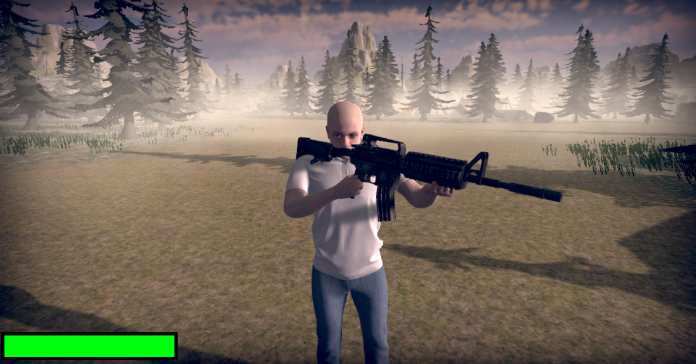

Troisième Version
Model 3D
Pour la dernière soutenance, nous avons dû régler les derniers bugs sur la map , c’est-à-dire les problèmes de proportions, de collisions.
Il y avait aussi des objets qui s’était retrouvés sous la map lorsque nous avons voulu assembler les différentes parties du projet.
Il a fallu donc régler juste de simples détails, cependant il était nécessaire et important de les modifier. De plus, Le personnage que nous allons incarner
au cours de la survie est Brian , nous l'avons téléchargé depuis le site Mixamo.
Animations 3D
Après la première et la deuxième soutenance, nous avons donc deux visuels différents qui vont nous être utiles. Les travaux de la première soutenance ont permis de réaliser les animations du personnage.
Ainsi, le joueur peut se déplacer tout en étant animé. Il peut rester sur place, marcher en avant, sur les côtés, en arrière, il court et il peut sauter. Tout cela avec l'amre dans la main.
Pour la deuxième soutenance, une vue en première personne a été faite, étant composée simplement des bras et de l'arme.
Ici, il y a une animation Idle encore une fois, pour que le visuel ne soit pas figé et soit réaliste. Avec ceci, nous avons également une animation de rechargement et une animation de tir.
Avec ces deux éléments, nous avons pu les combiner afin d'obtenir ce que l'on veut, c'est-à-dire de voir la première personne pour nous-même, avec les bras et l'arme, mais aussi que nos coéquipiers voient le personnage qui a été travaillé pour la première soutenance, et non pas les bras et l'arme.
C'est à l'aide de Photon et de ses fonctionnalités que nous allons pouvoir manipuler tous ces composants.
C'est grâce au "Photon Animator View" que tout est synchronisé.
Ceci étant, il faut aussi pouvoir gérer quelle arme est dans la main du joueur. Pour cela, nous avons référencé les GameObjetcs "FPS-AK47" et "FPS-M4A1" pour la première personne, et "AK47" et "M4A1" pour les animations du joueur comme cela est fait sur la figure ci-dessous.
"PV" est la variable "Photon View", donc si le script est celui du joueur, alors on desactive "Perso", qui est le personnage en entier. Ainsi, seule la vue en FPS est affichée, avec l'AK (car elle est déjà activée sur Unity, et la M4 est désactivée).
Dans le cas contraire, si le script est celui d'un autre jour, le booléan "PV.IsMine" est "false". Ici, nous désactivons alors les deux GameObjects qui représentent la première personne, et activons l'AK car c'est la première arme du joueur, donc c'est forcément cell-ci que l'on veut voir, et on désactive également la M4,
sinon les armes se superposent, ce que l'on ne veut pas. Tout ceci est lancé à la première compilation, mais il faut également actualiser ces données à tout instant.
Ainsi, dans "l'Udpate" (qui est compilé à chaque rafraîchissement du jeu), lorsque "l'ItemIndex" (permettant d'afficher l'arme 0 ou l'amre 1 dans la liste d'arme de "Items" pour la première vue) est modifié, alors on active ou desactive l'Ak et la MK.

Audio
Les derniers réglages audio ont été faits, nous avons baissé par exemple les coups de feu qui étaient
beaucoup trop forts. Avec l'ajout d'une arme, nous avons également pris un nouveau bruit. Les
propriétés de ce fichier audio ne répondant pas à nos attentes, c'est avec l'aide d'Audacity que nous avons pu
le modifier. Le problème était le suivant : le son n'était pas parfaitement synchronisé avec l'animation de tir. Il a donc
fallut couper le début de l'enregistrement afin d'avoir une cohérence avec le visuel.
Engine
Pour cette soutenance, la première taches concernant l'Engine de notre jeux était d'adapter le path finding des zombies à notre Map.
Malgré la vaste présence d'obstacle. La librairie "NavMeshAgent" fut notre solution. Grâce à ses méthodes, le calcul des chemins emprintables
pour aller d'un point A au plus proche d'un point B fut un jeu d'enfants. Il suffit pour cela de creer un agent représenté par un cylindre d'un
certain diamètre et hauteur. Et l'algorithme calcule tout les espaces emprintables par ce cylindre. gràce à cela "l'Agent" calculant le trajet à
emprinté sur cette dite surface. La seconde tache fut d'implémenter les zombies avec les serveurs. Pour que chaques joueurs puissent voir les zombie
à leurs emplacement et leurs animations. Pour cela photon fut la meilleurs idée trouvé du fait est qu'il avait déjà été utilisé précédemment pour coder
le menu. Mais au therme de tous ces testes. Cela fut un échecs. L'implémentation en solo ou en lien avec l'hôte fonctionne sans problèmes mais dés lors
que l'on intègre le multi joueur, plus rien de fonctionne. Tous celà est de ma faute, j'avais sous estimé la tâche et malgré de nombreux essais. Rien ne
fonctionne complétement. Parmis ces tentatives, l'utilisation d'un "GameManager" rien ne fait celà ne fonctionner à moitié.
Je suis triste et dériblement exaspérer de ma performance pour cette soutenance final.
Interfaces
Pour cette dernière soutenance, la majorité du travail à faire pour cette partie fut sur les menus. En effet, jusqu'à là,
le menu a été fait en sorte à ce qu'il soit purement fonctionnel. Nous nous étions point penché sur l'aspect esthétique des menus.
Tout d'abord, pour le menu principal, plusieurs modifications ont étés faites :
- Le titre du jeu a été ajouté en haut à gauche. Il possède un fond personnalisé et un dégradé de couleur pour lui donné du caractère.
- Deux paragraphes ont été ajoutés dans le coin inférieur gauche pour expliquer le contexte et le but du jeu mais aussi quelques instructions pour favoriser la navigation dans les menus et pour quitter le jeu.
- Le model 3D qu'incarnent les joueurs en jeu s'affiche dorénavant dans le menu principal avec aussi une animation de repos qui tourne en boucle (généralement appelé "Idle Animation"). Cela permet de rendre le menu principal plus vivant et plus dynamique mais aussi d'avoir un aperçu du personnage.
- Une couleur différente a été ajouté à chaque bouton pour les distinguer plus facilement.
- La position et l'ordre de chaque élément a été réajusté pour rendre le menu principal plus cohérent et facile d'utilisation.
- Le bouton "Quit Game": est maintenant pleinement fonctionnel.
Par la suite, dans tous les autres menus, un fond d'écran a été ajouté pour rendre les menus plus captivants.
Dans le lobby de la room (la salle d'attente), la liste des commandes disponibles en jeu a été ajoutée sur le côté pour que les joueurs soient au courant des différentes options qu'ils ont en jeu.
La deuxième partie de l'interface se consacre à l'interface utilisateur en jeu. Nous avons ajouté 3 éléments dans le coin en haut à gauche :
- L'argent que le joueur possède actuellement. Ce compteur se met à jour dès qu'il recoit de l'argent (en tuant des zombies) ou perd de l'argent (quand il achète quelque chose au magasin par exemple).
- Le niveau de son AK. De base au niveau 1, augmente de 1 à chaque fois qu'il améliore son AK au magasin.
- Le niveau de sa M4A1. De base sur l'état "M4A1 not yet unlocked". Passe au niveau 1 lorsque le joueur l'achète au magasin et augmente de 1 à chaque fois qu'il améliore son M4A1.
De plus nous avons ajouté un viseur au milieur de l'écran (fait à partir de 4 images de couleur unie) et nous avons rendu le curseur invisible et bloqué sur place (pour pas avoir un curseur qui gesticule partout sur l'écran et pour éviter qu'il sorte de la fenêtre sur les ordinateurs possédant plusieurs écrans en mode "étendre l'affichage").
Enfin, la dernière partie de l'interface fut sur l'affichage de la description des différentes caisses du magasin lorsqu'on pointe vers celles-ci. Pour cela, nous avons fait en sorte que les objets avec lesquels ont peut intéragir (dans notre cas, les caisses du magasin) appartiennet à une même interface "IInteractable" (une définition de type, similaire a une "class").
Ensuite, chaque caisse possède un script (un fichier C\#) contenant la description de la caisse sous format texte et aussi la méthode qui permet d'effectuer l'action en question). Alors quand un joueur détecte un objet interactif, il récupère ses informations (description + méthode) à partir du script de l'objet vers lequel il pointe et affiche sa description sur l'interface
utilisateur du joueur.
Game Management
Afin d'implémenter un système d'amélioration d'armes il a paru nécéssaire d'ajouter un "shop" permettant l'achat de dégat supplémentaire sur nos armes. Ainsi qu'un shop permettant d'acheter une seconde armes. Cette Argent fut donc implémenter grâce à une classe "GameManagement" qui au fur et à mesure que les statistiques des zombies augmentent l'argent offert à chauque élimination augmente.
Réseau
Pour la partie réseau, comme pour la deuxième soutenance, consistait plus qu'à synchronisé tout ce qui est commun aux joueurs. Cette fois-ci, il fallait synchroniser les animations de mouvements des joueurs, la position des zombies, leur rotation, ainsi que leur animation de mort.
Autres \ Détails
Comme dit dans le paragraphe de la même section de la version précedente, il existe des éléments de la conception d'un jeu
vidéo auxquels nous n'avions pas pensé au début du projet. Il a fallu cette fois-ci gérer les " Project Settings " (les
paramètres généraux sur le projet en entier) tel que donner une icône au jeu, choisir le type d'affichage (dans notre cas, en
"Fullscreen Windows", c'est-à-dire en plein écran). Nous avons aussi du régler certaines options lors du " Build " final (un
Build est un processus qui permet d'obtenir un dossier qui continent tout ce dont le jeu a besoin pour fonctionner ainsi qu'un fichier ".exe"
pour lancer le jeu) tel que passer en " Release Build " et non plus en " Development Build " mais aussi mettre la version du jeu à 1.
Site Web
Concernant cette fameuse partie, malgré un avancement très conséquent pour la deuxième soutenance, le travail restant
pour la dernière soutenance restaient tout autant volumineux. Dans un premier temps, il a fallu adapter la page pour tout
les écrans, c’est-à-dire autant pour les mobiles que pour les ordinateurs , sans oublier les rétrécissements de page. Pour cela,
nous avons utilisé la commande css "Media queries", c’est un module permettant d’adapter le contenu d’une page "Web" aux caractéristiques
de l’appareil de l’utilisateur. Cette partie était pour moi la partie la plus complexe, surtout concernant le menu car celui-ci étant en ligne sur ordinateur, il a fallu le transformer en colonne et ce n’est pas aussi simple que nous le croyons.
Ensuite, nous avons ajouté des animations pour animer le site Web et que celui-ci paraisse moins scolaire et
soit plus attractif. Pour cela nous avons utilisé la méthode des "Keyframes". En CSS, les "Keyframes" en français,
les images clés sont utilisées pour les animations. Il vous donne plus de contrôle sur l’animation que vous souhaitez effectuer.
L’animation est créée en passant progressivement d’un style à l’autre. Cette méthode nous a permis d'obtenir un rendu très intéressant.
On retrouve également des boutons pour contacter les différents membres du groupe sur la page consacré aux membres. Le site "Web"
possède toujours le bouton pour accéder au GitHub. Nous avons également rajouté la dernière version du projet soit la version 3 dans l’onglet « Le Projet ».
Il a également fallu mettre en place le bouton pour télécharger le jeu mais également le rapport complet du projet. Et enfin, nous avons inclus le manuel
d’utilisation, d’installation, et de désinstallation à l’onglet «Téléchargement» du site Web. Sans oublier la création d'une nouvelle page
«Mode d'emploi» qui est l'équivalent du manuel d'utilisation du jeu. De plus, nous avons ajouté toutes les références manquantes, par exemple tous
les liens des assets que nous avons utilisés, les liens des différents audios, etc.
Quand nous regardons tout ce que nous avons cité avant nous pourrions croire que ce n’est pas si long mais en html et en css un problème est très vite arrivé.
De plus, l’esthétique est un aspect du site "Web" qu’il ne faut pas négliger et pour obtenir un rendu qui plait à
tous les membres du groupe, c’est un vrai travail car l’inspiration ne tombe pas du ciel et qu’il faut parfois faire beaucoup
de recherche pour avoir une idée. Et après bien évidemment il faut faire les recherches permettant de coder celle-ci. De plus,
concernant notre site toutes les images sont issues de notre jeu. Enfin, les langages de programmations que nous utilisons pour
le site Web sont facile d’utilisation et à porter de tous lorsque nous savons bien se renseigner sur ceux-ci. Notre page "Web" est désormais finie, nous espérons que celle-ci vous plaira.

Création d'un manuel d'utilisation
A l'aide du site Overleaf, nous avons créé un latex exclusivement pour le manuel du jeu. Celui-ci rassemble
tous les éléments important pour une bonne utilisation du jeu, par exemple, les commandes, les règles du jeu, le menu...
Cette partie est équivalente à un guide d'utilisation. Puis, celui-ci est également composé d'un guide d'installation.
Le manuel d'utilisation est disponible sur la page de téléchargement de notre site.
Création d'une jaquette pour le jeu
Nous avons également créé la jaquette de notre jeu à l'aide du site canva.com et de l'application mobile PicsArt.
Pour créer celle-ci, nous avons assemblé des images de notre jeu ainsi que des éléments du logo de notre jeu.
Nous avons également ajouté le logo de restriction d'âge et celui
qui montre qu'il s'agit d'un jeu PC. Cette jaquette sera imprimée afin d’être apposée sur la boite qui contiendra le jeu.
Le rendu visuel de notre jaquette est disponible sur la page de téléchargement de notre site.


.png)
.png)
.png)
.png)

.png)

.png)